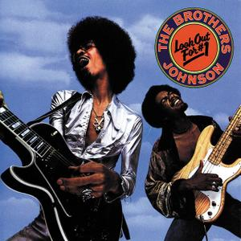

Sunday, August the 10th, 2014
back to: title, date or indexes
The willow warbler is a type of bird which warbles in willows. I am not a bird—obviously!—but I, too, have warbled in willows. It is a simple enough matter. What you do is locate a clump of willows, then wander into the midst of them, and start warbling. You can then describe yourself as a willow warbler, perhaps when, at a sophisticated cocktail party, leaning insouciantly against a mantelpiece, you are approached by a fellow guest who asks you what you do. “I am a willow warbler”, you can say, truthfully.
Among the various definitions given for warble in the OED, the one I find particularly helpful is “To twitter, as a young bird; to make uncertain attempts at singing”. This is my kind of warbling, because, frankly, I cannot sing for toffee. But there is nothing to stop me making “uncertain attempts” at singing, in the midst of a clump of willows, whenever the mood takes me. And take me it often does!, to the point of mania.
I have a varied repertoire of songs which I warble—or sing uncertainly—on my willowy jaunts. Land Of Ladies by the Brothers Johnson, Vienna by Ultravox, Boom Bang-A-Bang by Lulu, and Nunc dimittis servum tuum by The Toofles are among my favourites. I struggle with the words—and tunes—of all of them, but that is par for the course with warbling. Occasionally I am shot at by farmers.

Hooting Yard on the Air, September the 25th, 2014 : “Our Man In Ulm” (starts around 12:27)